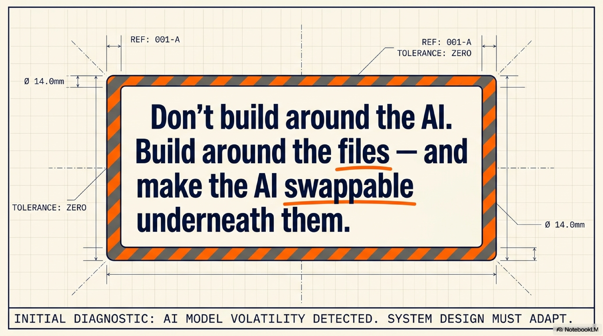
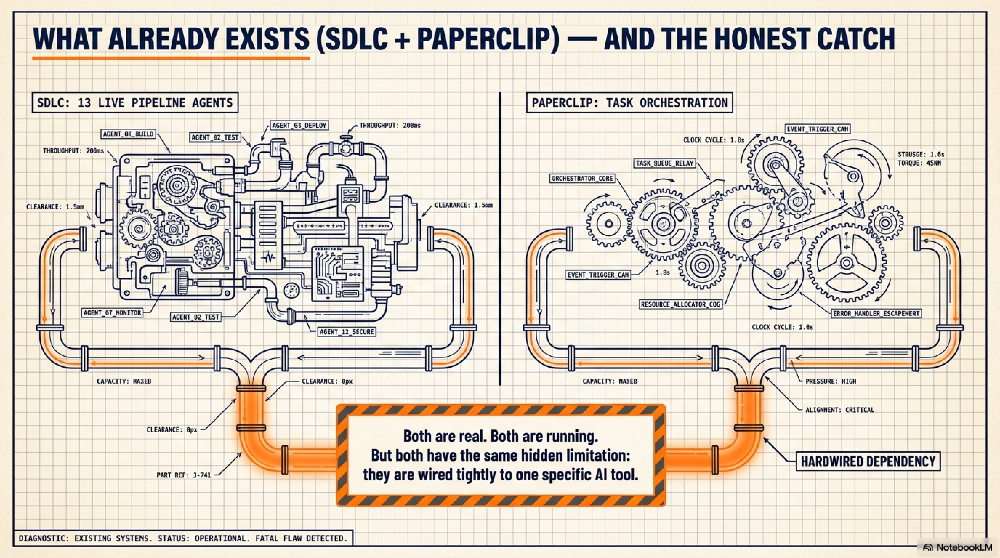
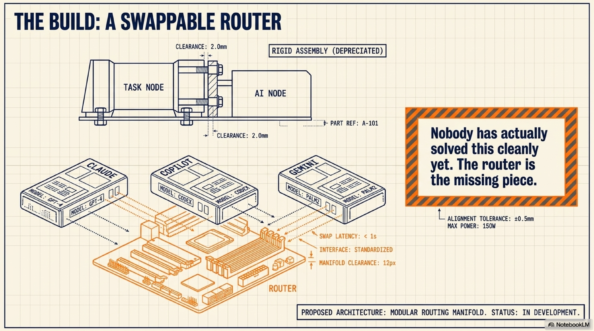
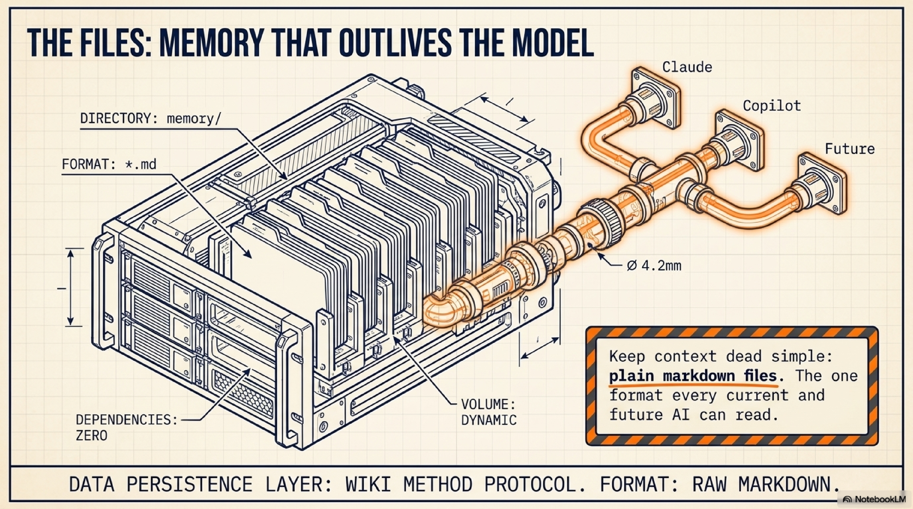
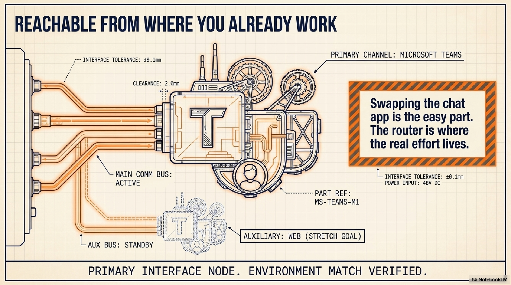
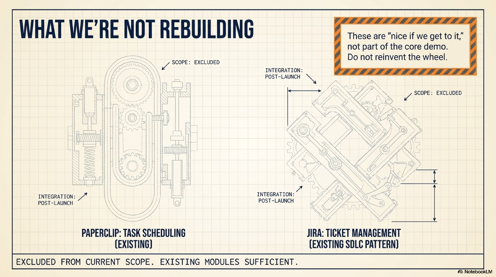
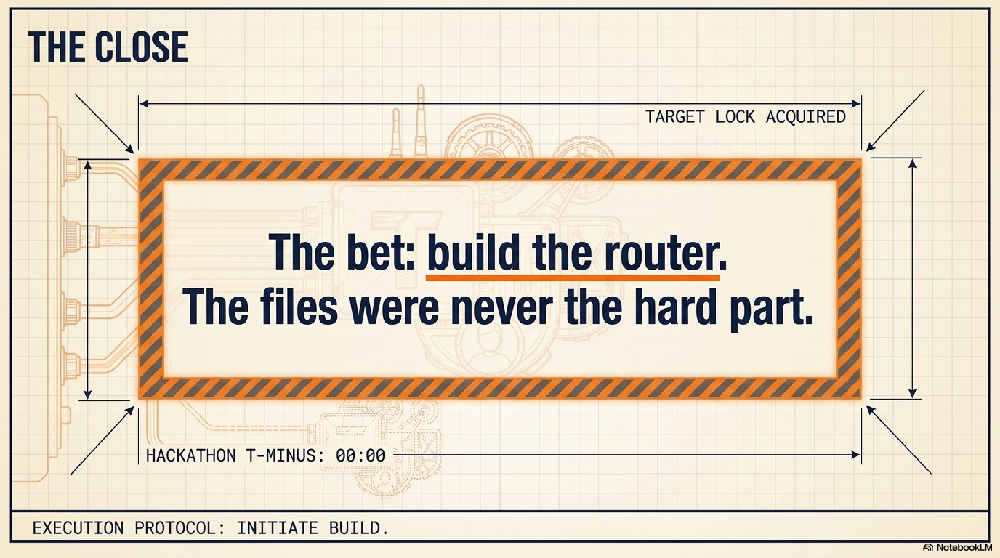

"AI is changing faster than any of us can keep up with. Whatever model is best today — Claude, Copilot, Gemini — will probably be replaced by something better within the year. If we build our hackathon entry around one specific AI tool, we've built something that expires.
But there's one thing that doesn't expire: files. Every AI, past and future, still has to read text to know what's going on. So here's our bet: don't build around the AI. Build around the files — and make the AI swappable underneath them."

"Before we pitch an idea, let's show you what's already real, so you know we're not starting from nothing.
We already run SDLC — a system where 13 specialized AI agents handle our actual software delivery: writing code, reviewing it, testing it, moving Jira tickets through our real workflow. This isn't a demo. It's running in production, today, for a real team.
We also already use Paperclip — a mature open-source tool that manages AI agents like a company org chart: tasks get assigned, agents wake up on a schedule, work gets tracked. Also real, also running.
Here's the catch, and we want to be upfront about it: both of these are wired tightly to one specific AI tool. SDLC's automation only works because of a feature that's exclusive to one AI coding assistant — swap in a different one, and all that automation silently stops working. We checked. It's not a small gap, it's a hard wall.
That's not a criticism of what we built — it's the exact problem our hackathon entry is going to solve."

"So here's what we're actually proposing to build this hackathon: a small, simple router.
Think of it like a receptionist. A task comes in. The router checks: which AI is on duty today — Claude or Copilot? It hands that AI the relevant context, lets it do the work, and writes down what happened for next time. The router doesn't care which AI is behind the desk. That's the whole point.
This is genuinely the missing piece. We looked at several existing systems that claim to support multiple AI tools — including a serious, actively-developed open-source project — and even they don't have a clean version of this. They wire up each AI tool by hand, one at a time, with separate code for each. Nobody has actually solved this cleanly yet. That's exactly why it's worth a hackathon."

"The router needs somewhere to keep context — what's been done, what's pending, what this project is about. We're keeping that dead simple: plain markdown files. No database, no proprietary format.
Why does this matter? Because plain text is the one format every AI — the ones we use today and whatever wins next year — can already read. We've actually already proven this works in miniature: our SDLC system already keeps its own shared memory this way, in plain files, and it's held up fine in production.
The idea itself has a name in the AI community — sometimes called the 'wiki method': raw notes go in, get organized into a structured wiki over time, and that structure compounds instead of starting from zero every session. We're not claiming it beats every possible alternative at every scale — just that for a project like this, plain files you can open and read yourself beat a black-box database every time."

"Where do you actually talk to this thing? We're deliberately keeping this simple and picking the channel that matches how this company actually works: Microsoft Teams.
That's it. Not Discord, not WhatsApp — Teams, because that's where you already are. If there's time, we might add a simple web page too. Swapping which chat app we're reachable from turns out to be the easy part — the hard part was the router, which is where we spent our real effort."

"Last thing, quickly: we're not trying to reinvent task tracking or ticket management this weekend. Paperclip already does agent task-scheduling well, and we already use it personally — no reason to rebuild that. And for anything Jira-related, if we have time, we'd borrow a pattern we already know works from SDLC. Both of these are 'nice if we get to it,' not part of what we're demoing today."

"So, to bring it back to the start: every AI tool will be outdated within a year. We're not betting on one. We're betting on the one thing that doesn't expire — plain files — and building the one piece that's actually still missing: a router that can hand real work to whichever AI is best that month, starting with the two we already use, Claude and Copilot.
That's what we want to spend this hackathon building."